Season Four was the most highly rated of all The Office seasons.
IMDB user ratings rated season 4 the highest while seasons 8 & 9 were the lowest rated. Season 4 confirmed that Jim & Pam are now dating as well as Ryan returning to the Scranton branch of Dunder Mifflin.
Season 4 also contains two of the top 10 episodes of the entire series: Goodbye, Toby and Dinner Party.
Season 8 & 9 take place after Michael Scott, one of the most popular characters, left Dunder Mifflin, thus contributing to its lower ratings.
The series finale is the most highly ranked episode, indicating that the show went out with a bang.
Coming in second is the episode "Goodbye, Michael", from season 7, where Michael Scott (played by Steve Carell), exited the show.
Other episodes in the top 15 are Niagara Parts 1 & 2, which featured the wedding of popular characters Jim & Pam, as well as Threat Level Midnight which is an episode based on a movie script written by Michael Scott, with all the parts played by Dunder Mifflin employees.
It is also of note that while Season 9 was the lowest rated season of The Office, three episodes from this season appear in the top 15 (Finale, A.A.R.M and The Injury)
Episode Rankings
See below for a ranking of the top 5 episodes for each season. Other than season 1, which was only 6 episodes long, and season 4, which was 14 episodes long, all other seasons had between 22-26 episodes.
Season 1
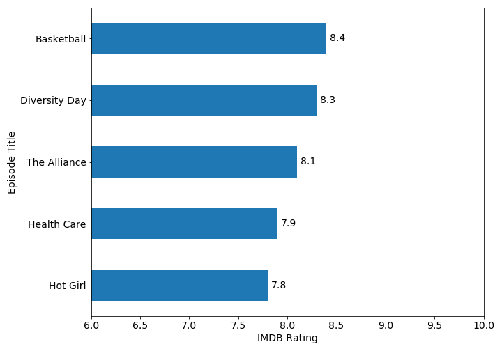Season 2

Season 3
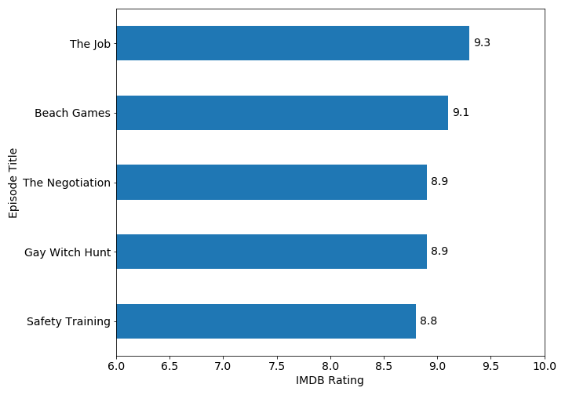Season 4
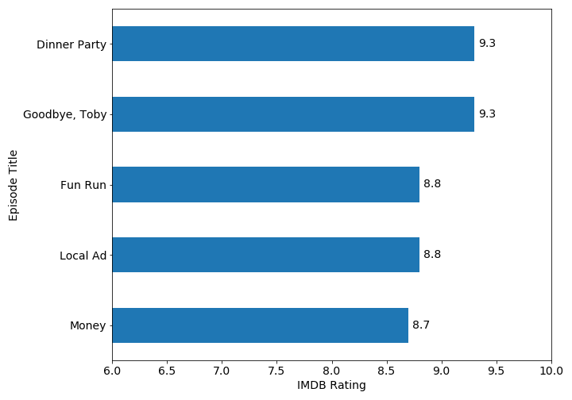Season 5
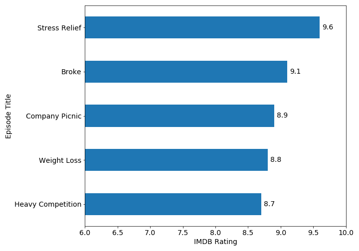Season 6
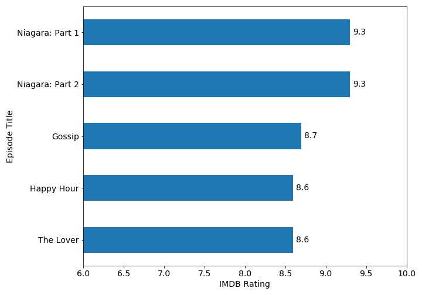Season 7
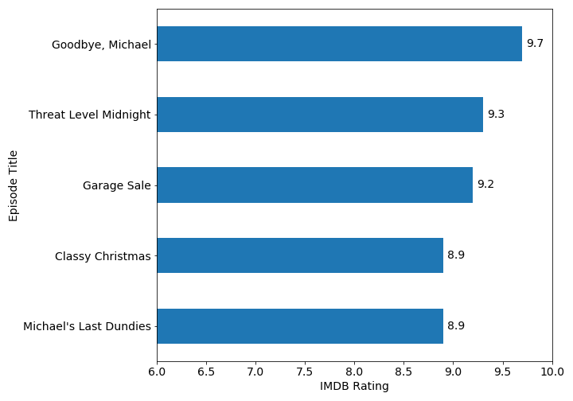Season 8

Season 9
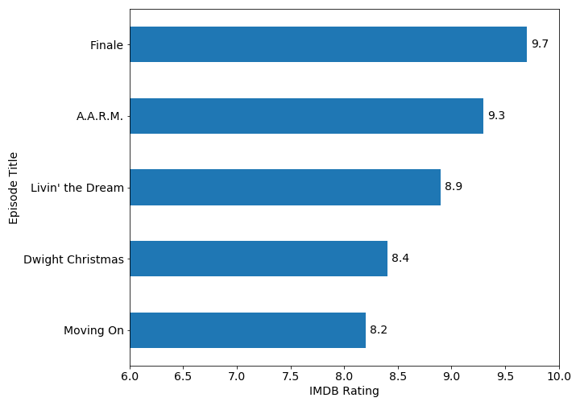
There are some outliers in the season ratings.
Most of the episode ratings for each season fall within the quartile range, however there are a few exceptions.
It is worth pointing out that while Season 9 is the lowest ranked season, there are three outliers above the quartile range: Finale, A.A.R.M. and Livin the Dream.
Episode Outliers
See below for a closer look of the outliers, if any, for each season.
Season 1

Season 1 shows no outliers, and the ratings were pretty consistent throughout the season, based on the size of the box.
Season 2
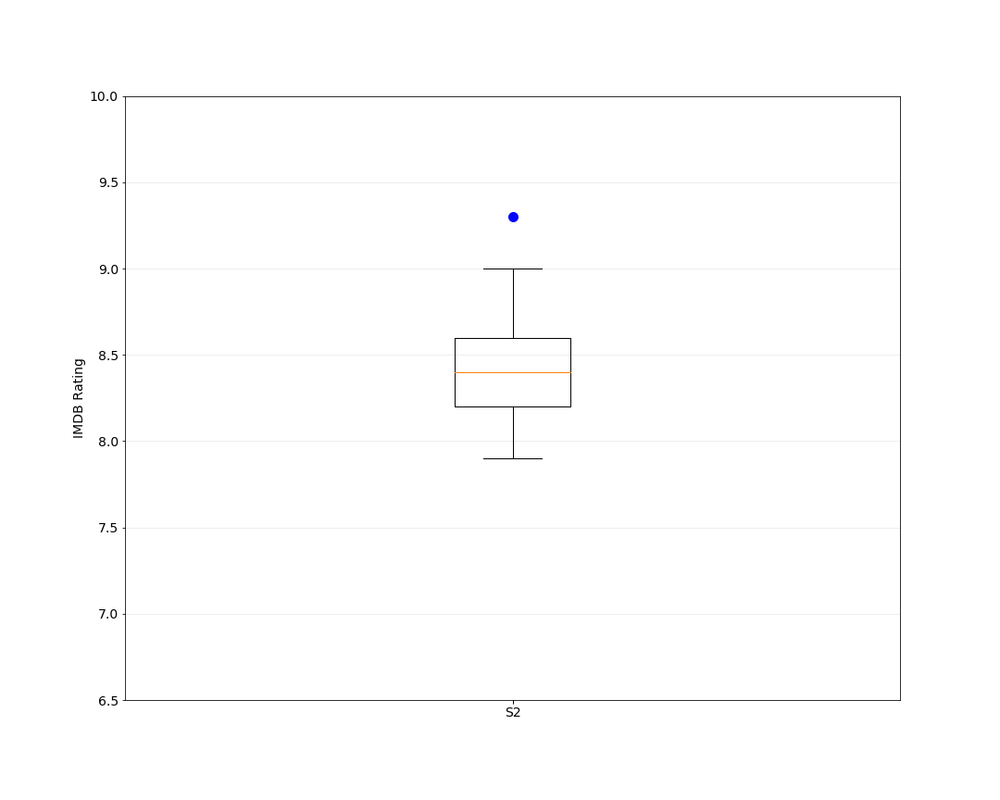Season 2 is also fairly consistent in it's episodes rankings, however the episode "Casino Night", in which the employees of Dunder Mifflin hold a casino charity event in the warehouse, is a notable outlier.
Season 3
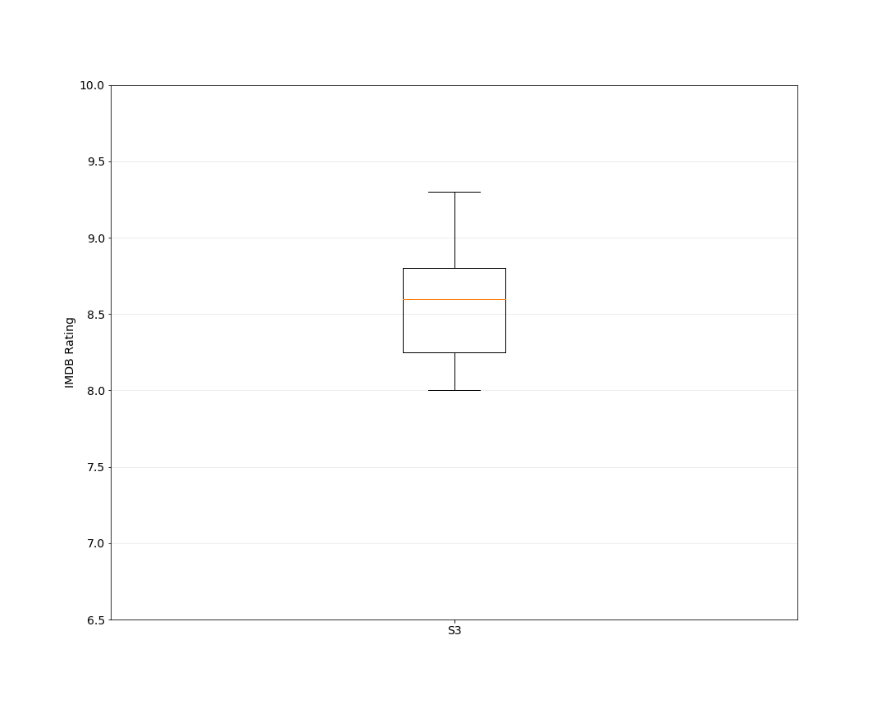Season 3 does not have any outliers, and the box size shows there is not a huge varience in the episode ratings across the season.
Season 4

Season 4 does not have any outliers and the shorter box shows that the episode ratings were fairly consistent across the season.
Season 5
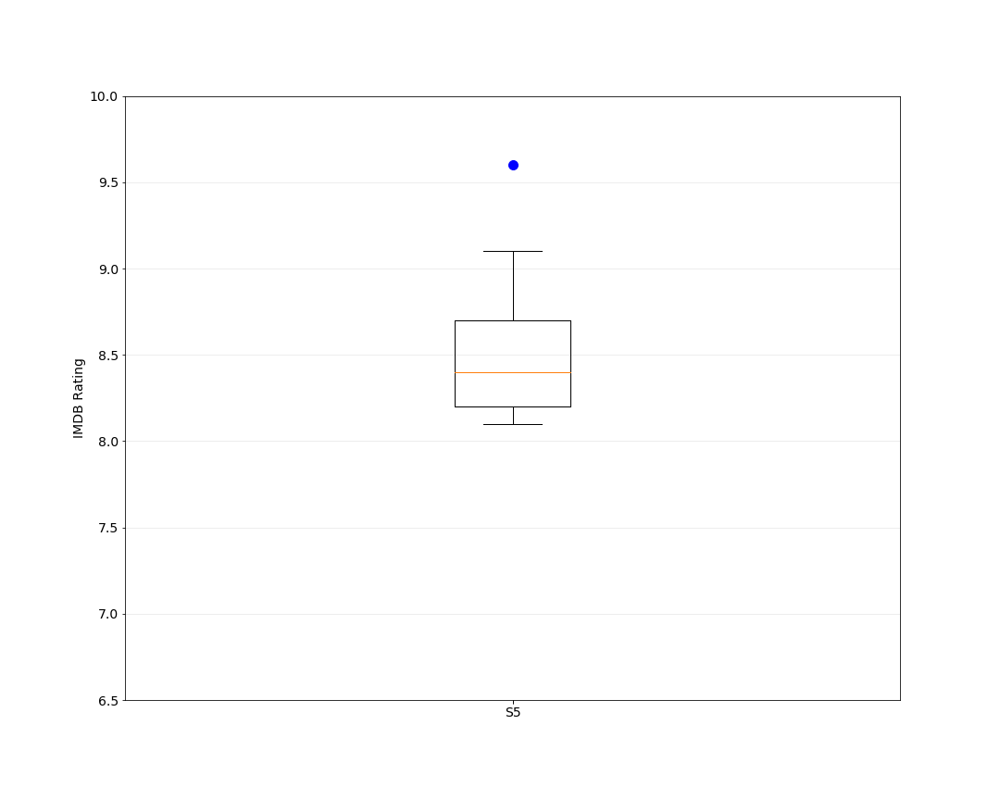Season 5 received fairly consistent ratings across the season, although there is an outlier for the episode "Stress Relief" in which Dwight stages a fire saftey drill (with real fire) and there is a cameo of Jack Black, Jessica Alba and Cloris Leachman, who star in an illegally downloaded film watched by Andy, Pam and Jim.
Season 6
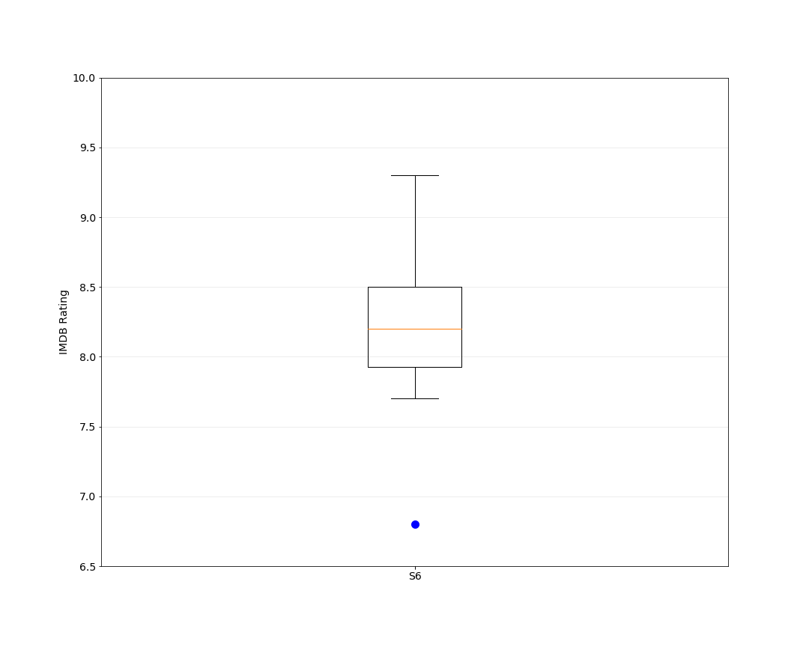Season 6 has fairly consistent user ratings across the season, although there is an outlier for the episode "The Banker", which is a clip show of part events at Dunder Mifflin.
Season 7
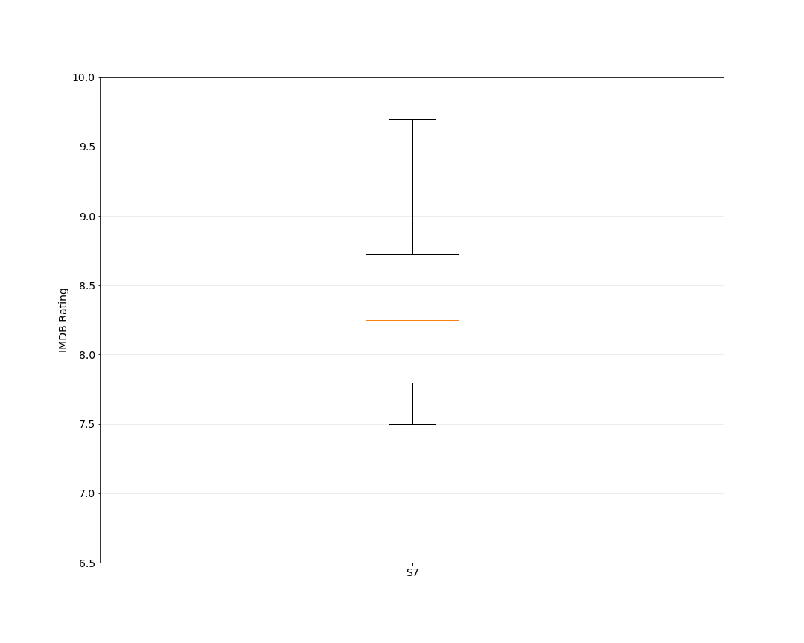Season 7 has more variation in the episode ratings than the rest of the seasons, however, there are no outliers.
Season 8

Season 8 is one of the lowest rated seasons of the series and there is an outlier for episode "Get the Girl" where Andy drives down to Florida to win back Erin, and the polarizing character of Nellie shows up and claims Andy's manager position in his absence. This is also the lowest rated episode of the series.
Season 9
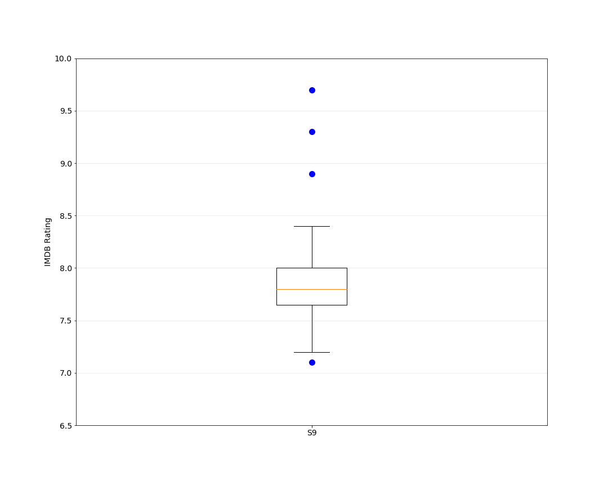Season 9 is the lowest rated season of The Office, however it does have 4 outliers (3 higher and 2 lower). The high outliers include the last three episodes: "Finale", "A.A.R.M", and "Livin the Dream". The low outlier is "Here Comes Treble", where Andy invites his old a cappella group from Cornell to perform for Halloween.